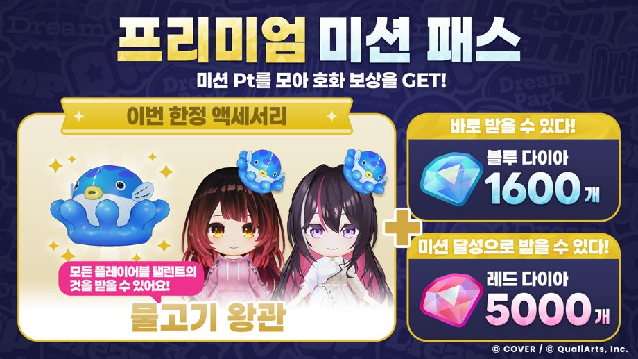

2026년 10월 「미션 패스」가 시작!
동시에, 한정 액세서리 「물고기 왕관」 등을 획득할 수 있는 「프리미엄 미션 패스」 판매 시작!
「프리미엄 미션 패스」를 구매하면 해당 월의 「미션 패스」 프리미엄 보상이 해제됩니다.
※「프리미엄 미션 패스」의 다음 업데이트는2026-11-01 5:00:00입니다.
◆개최 기간
2026-10-01 5:00:00,2026-11-01 4:59:59
◆개방 조건
메인 스토리 1장 5화 「비밀 결사, 등장!」 클리어
주의 사항
・위클리 미션에서 미션 패스가 변경된 시점에 이미 진행 중인 미션은 자동으로 달성 상황이 반영됩니다.
・개최 기간 및 내용은 예고 없이 변경될 수 있습니다.
・한정 액세서리는 추후 다시 등장할 가능성이 있습니다.
・자세한 내용은 [파크]→[미션]을 확인해 주세요.